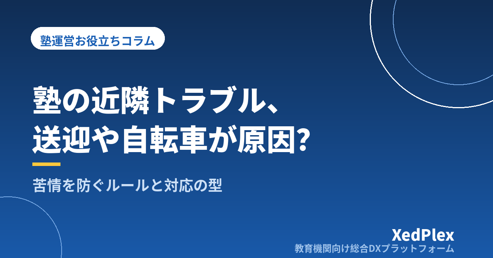

塾の近隣トラブル、送迎の車・自転車・たまり場をどう防ぐ？｜苦情が来る前に決めるルールと、苦情が来たときの対応手順

「お宅の生徒さんの迎えの車が、毎晩うちの前に停まっているんですが」──。授業を終えてほっとしたところに、近所の方からこう声をかけられた経験はないでしょうか。塾の授業が終わる夜の時間帯は、住宅街では静かに過ごしたい時間です。そこに送迎の車が並び、自転車が歩道にはみ出し、授業を終えた生徒たちが入口の前で話し込む。塾の側から見れば「いつもの光景」でも、近くに住む人にとっては毎日のストレスになり得ます。
近隣との関係は、一度こじれると修復に時間がかかり、口コミや評判にも影響します。一方で、塾長が毎晩外に立って注意し続けるのも現実的ではありません。この記事では、個人塾・小規模塾で起きやすい近隣トラブルを整理し、苦情が来る前に決めておくルールと、苦情が来たときの対応手順を型にする方法を紹介します。
個人塾で起きやすい近隣トラブル3つと、その原因
近隣からの苦情は、授業の中身ではなく「授業の前後の時間」に集中します。主なものは次の3つです。
| トラブル | よくある状況 | 根っこにある原因 |
|---|---|---|
| 送迎の車 | 終了時刻の前から車が並ぶ。他人の家や店舗の前、駐車場の出入口付近で待つ。エンジンをかけたまま待機する | 終了時刻が読めず、保護者が早めに来て待っている。「どこで待てばよいか」が伝わっていない |
| 自転車 | 歩道や隣の敷地にはみ出して停める。帰りに並んで走る、ベルや声が響く | 駐輪できる場所と台数が決まっていない。混む時間帯に一斉に出入りする |
| たまり場・声 | 授業前に入口の前で待つ、終了後に話し込む。コンビニや公園に集まる | 開室前に入れない、帰宅ルールがない。生徒にとって「外で待つ」しか選択肢がない |
3つに共通するのは、保護者や生徒の行動が「塾がルールを決めていないすき間」で起きていることです。誰かのマナーが特別に悪いわけではなく、待ち方・停め方・帰り方を決めていないと、それぞれが自分にとって便利な方法を選ぶのは自然なことです。逆に言えば、すき間を埋めるルールを先に作れば、多くは防げます。
苦情が来る前に決めておく「教室まわり」のルール
ルールは、教室の立地を実際に歩いて確かめたうえで作ります。授業の終了時刻に外に出て、車・自転車・生徒がどこに集まるかを一度見ておくと、問題の場所がはっきりします。
送迎の車：「どこで・いつ・どう待つか」を決める
- 停車してよい場所・いけない場所：教室前の道路の状況、近隣の家や店舗の出入口、駐車場の場所を確認し、地図に印をつけて保護者に示します。駐停車が禁止されている場所や時間帯は、道路標識や所轄の警察署で確認し、ルールが交通法規に反しないようにします
- 待ち方：「エンジンを切って待つ」「クラクションで合図しない」「到着は終了時刻の○分前以降に」など、具体的な行動で書きます
- 時間差での退室：学年やクラスで終了時刻を数分ずらすだけでも、車が一度に集中するのを和らげられます
自転車：「置く場所と台数」を決める
- 教室の敷地内や借りられる場所に駐輪スペースを確保し、テープや表示で範囲を明確にします
- スペースに入りきらない台数になる時間帯がないかを、在籍者の通塾手段から把握しておきます
- 建物の共用部分を使う場合は、管理会社や貸主のルールを先に確認します
授業前後：「外で待たせない」工夫をする
- 開室時刻を早めに設定し、授業前は室内で待てるようにする（自習室の運営ルールは「個人塾の自習室運営、ルールはどう決める？」を参考にしてください）
- 終了後は「迎えが来るまで室内で待つ」「迎えのない生徒は寄り道せず帰る」を基本ルールにする
- 入口前で話し込まないよう、講師が終了時に一声かける役割を決めておく
「外で待たせない」「寄り道せず帰る」は、近隣への配慮だけでなく、夜の帰宅の安全にもつながります。帰宅ルールの作り方は「塾の防犯対策、夜の帰宅と教室の安全をどう守る？」で詳しく整理しています。
保護者・生徒への伝え方と、守ってもらう工夫
ルールは作っただけでは守られません。伝える時期と方法を決めて、繰り返し届ける仕組みにします。
| タイミング | 伝える内容と方法 |
|---|---|
| 入塾時 | 入塾書類と一緒に「送迎・駐輪・待ち方のルール」と地図を1枚で渡す。口頭でも説明する |
| 年度初め・講習前 | 時間割や通塾者が変わる時期に、改めて全保護者へ配信する |
| 苦情や気になる様子があったとき | 特定の家庭を名指しせず、全体への「お願い」として配信する |
| 生徒へ | 授業の最後に定期的に伝える。掲示物も入口付近に貼る |
保護者へのお願いは、理由とセットで伝えると受け入れられやすくなります。
このように、「早く来て待たなくても大丈夫」と思える材料を一緒に示すことがポイントです。保護者が早めに来て路上で待つのは、「いつ出てくるか分からない」という不安からであることが少なくありません。生徒の退室時に保護者へ通知が届く仕組みがあれば、待つ時間そのものを短くできます。入退室の記録と通知の方法は「小さな塾でもできる入退室管理」を、全保護者への連絡手段の整え方は「塾の保護者連絡、講師の個人LINE頼みは危険？」を参考にしてください。
近隣から苦情を受けたときの対応手順
どれだけ準備をしていても、苦情が来ることはあります。大切なのは、その場の対応で関係を悪化させず、改善の姿勢を見せることです。
1. まずは話を聞き、お詫びと受け止めを伝える
言い分があっても、最初は遮らずに聞きます。「いつ・どこで・何が困っているのか」を具体的に確認し、「ご迷惑をおかけしており申し訳ありません。状況を確認して対応します」と伝えます。その場で約束できないことは約束せず、いつまでに対応を知らせるかを伝えます。
2. 記録を残す
日時、相手（分かる範囲で）、内容、こちらの対応を短く記録します。同じ内容が繰り返されていないか、どの時間帯に集中しているかが、改善策を考える材料になります。記録と再発防止の考え方は、「塾への保護者クレーム対応の手順」と共通です。
3. 現地を確認し、ルールを見直す
指摘された時間帯に実際に外を見に行き、原因を確かめます。停車場所の変更、退室時刻の分散、駐輪場所の追加など、ルールのどこを直すかを決め、保護者・生徒へ周知します。
4. 対応したことを相手に伝える
「保護者の皆さまに停車場所についてお願いを配信しました」「終了時に講師が外に出て声をかけるようにしました」など、行ったことを具体的に伝えます。改善が見えることで、相手の受け止め方も変わります。
近隣の方から特定の保護者や生徒について指摘があった場合も、塾が窓口となって受け止め、当事者同士が直接やり取りする形にしないようにします。相手の方に保護者の連絡先を伝えることは避けましょう。また、器物の破損や危険な運転など、塾だけで判断できない事案は、必要に応じて警察や専門家に相談してください。
日ごろからできる「関係づくり」
近隣との関係は、トラブルが起きてからではなく、平常時の小さな積み重ねで作られます。
- 開業時・移転時のあいさつ：営業時間、生徒が出入りする時間帯、連絡先を書いたあいさつ状を近隣に届けておくと、困ったときに直接相談してもらいやすくなります（開業時の準備は「個人塾の開業で見落としがちな『事務まわり』の準備リスト」も参考に）
- 講習期間など時間帯が変わる前のお知らせ：夏期講習や受験直前期で出入りが増える時期は、事前に一言伝えておく
- 教室周りの清掃：入口付近のごみや自転車の乱れを、閉室時に確認する習慣をつける
- 苦情記録の振り返り：月に一度、記録を見返して同じ場所・時間帯の問題が続いていないかを確認する
こうした習慣は、塾長1人の注意力に頼ると続きません。閉室時の確認項目を講師と共有のチェックリストにしておけば、塾長が不在の日でも同じように回せます。
まとめ
塾の近隣トラブルの多くは、授業の前後に「待ち方・停め方・帰り方」が決まっていないすき間から起きます。教室のまわりを実際に歩いて問題の場所を確かめ、送迎の車・自転車・授業前後の過ごし方のルールを決める。入塾時と時期の変わり目に保護者・生徒へ繰り返し伝え、退室の通知など「早く来て待たなくてもよい」材料を用意する。苦情を受けたら、聞く・記録する・見直す・伝えるの順で対応し、日ごろからあいさつや清掃で関係を積み重ねる。
まずは今週、授業が終わる時刻に教室の外に5分だけ立ってみてください。車がどこに停まり、生徒がどこに集まっているか。それが最初に手を入れるところです。
この記事を書いた運営より
私たちは、個人経営・小規模の学習塾向けに、生徒管理・QRコードでの入退室記録・月次請求・保護者へのLINE/メール通知・AIによる学習支援までをひとつにまとめた教育機関向け総合DXプラットフォーム「XedPlex（ゼドプレックス）」を開発・提供しています。初期費用は0円、料金は生徒1名あたり月額300円（税込）から。生徒50名の塾なら月15,000円（税込）です。全国8つの教室で導入されており、導入塾には紹介ホームページの無料作成も行っています。機能の詳細説明はこちら。
XedPlexの詳細を見る